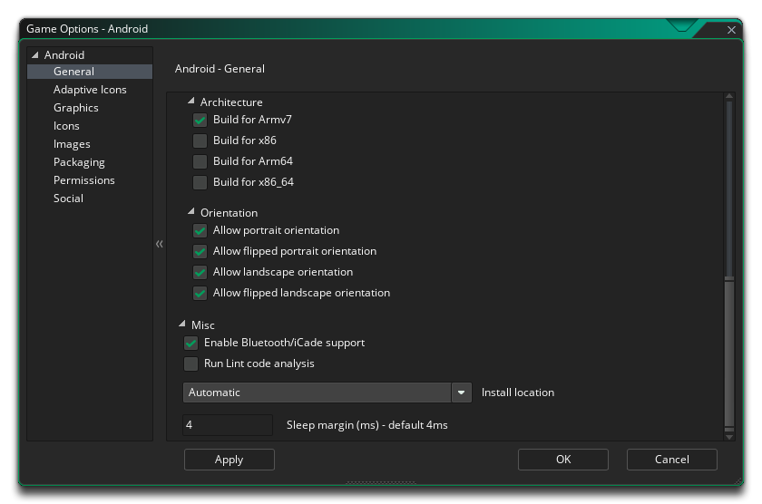

In diesem Abschnitt werden die verschiedenen Optionen beschrieben, die Ihnen zur Verfügung stehen, um zu steuern, wie Ihre Android Spielprojekte zusammengestellt werden. Die verschiedenen Abschnitte sind:
Der erste Teil des allgemeinen Abschnitts ist den Produktinformationen und den Build-Einstellungen gewidmet. Geben Sie die Produktinformationen ein, die den Anzeigenamen des Projekts und die Paketinformationen enthalten, die aus einer Domäne, einem Unternehmen und einem Produkt bestehen. Die Paketinformationen können nur aus Buchstaben von AZ und den Ziffern 0-9 bestehen, ohne Symbole oder andere Sonderzeichen oder Großbuchstaben. Diese Angaben werden dann zur Generierung einer Paket-ID mit dem Format " com.company.myappname ".
HINWEIS: Wenn Sie die Amazon Fire Spieloptionen bereits eingerichtet haben, können Sie oben auf die Schaltfläche "Von Amazon Fire synchronisieren" klicken, um die relevanten Informationen von den Feuer-Optionen auf die Android Optionen zu übertragen.
Sie müssen dann die Build-Tools- und Support-Library- Versionen sowie die Target-, Minimum- und Compile- SDK-Versionen festlegen. Die Build-Tools und die Support-Bibliothek werden verwendet, wenn GameMaker Studio 2 Ihr Spiel für das Android Ziel erstellt, und sollten auf der Grundlage der Tools, die Sie mit dem Android SDK Manager oder Android Studio installiert haben, geeignete Werte festgelegt werden.Das Ziel-SDK gibt an, dass Sie Ihre App mit der hier angegebenen Version (bis einschließlich) getestet haben. Dies soll lediglich dem Android Betriebssystem eine Vorstellung davon vermitteln, wie es mit Ihrer App in Bezug auf die Betriebssystemfunktionen umgehen soll. Für alle praktischen Zwecke werden die meisten Apps Target SDK auf die neueste veröffentlichte Version der API setzen (wie sie von der Compile SDK-Einstellung verwendet wird). Dadurch wird sichergestellt, dass Ihre App auf den neuesten Android Geräten so gut wie möglich aussieht.
Die Mindest-SDK- Version ist die Mindest-API-Stufe, auf der Ihr Projekt ausgeführt wird. Ab August 2018 hat Google API-Level 26 zum erforderlichen Minimum festgelegt. Wenn Sie jedoch Erweiterungen hinzufügen, ist möglicherweise ein höherer API-Level erforderlich.
Die Kompilierungs-SDK- Version ist die Version der API, für die das Projekt kompiliert wird. Dies bedeutet, dass Sie die in dieser API-Version enthaltenen Android API-Funktionen verwenden können. Wenn Sie beispielsweise API 16-Funktionen ausprobieren und verwenden, aber Compile SDK 15 festlegen, wird ein Kompilierungsfehler angezeigt. Wenn Sie jedoch das Compile SDK auf 28 setzen, können Sie die App weiterhin auf einem API 23-Gerät (sowie allen anderen Vorgängerversionen) ausführen.
Sie können eine der vordefinierten Zieleinstellungen auswählen, indem Sie auf die Schaltfläche SDK-Werte vor dem Auffüllen auf die ausgewählte API-Ebene auffüllen klicken. Dadurch wird eine Liste mit verschiedenen APIs geöffnet, aus denen Sie auswählen können. Wenn Sie eine davon auswählen, werden alle SDK-Dateien mit den entsprechenden Werten gefüllt, die Sie dann nach Bedarf verwenden oder bearbeiten können.
HINWEIS: Sie müssen die entsprechenden APIs im Android SDK Manager oder über Android Studio installiert haben, damit Ihre Projekte ordnungsgemäß kompiliert werden können.
Der zweite Teil des Abschnitts " Allgemein " behandelt die CPU- Architekturen, für die Sie bauen möchten. Folgende Optionen stehen zur Verfügung (Sie können alle oder nur diejenigen auswählen, die Sie benötigen. Beachten Sie jedoch, dass sich jede zur endgültigen Größe des Kompilierten addiert apk ):
- Für ARMV5 erstellen (standardmäßig aktiviert)
- Build for ARMV7 (standardmäßig aktiviert)
- Für x86 erstellen (standardmäßig aktiviert)
- Für Mips erstellen (standardmäßig aktiviert)
- Erstellen Sie für ARM64
- Build für x86_64
Nach dem Einrichten können Sie die verschiedenen Ausrichtungen auswählen, auf denen Ihr Spiel ausgeführt werden kann, um die beste Benutzererfahrung zu erzielen. Die verfügbaren Optionen sind:
- Landschaft
- Porträt
- Querformat
- Hochformat
Zum Schluss haben Sie noch folgende Möglichkeiten:
- Bluetooth / iCade-Unterstützung aktivieren: Dadurch wird Ihrem Spielprojekt Unterstützung für Bluetooth- oder iCade-Gamepads hinzugefügt. Dies ist standardmäßig aktiviert.
- Unterstützung für MOGA- Gamepad aktivieren: Dadurch werden MOGA-Controller unterstützt. Beachten Sie, dass auf alle MOGA-Funktionen über eine Erweiterung zugegriffen wird. Wenn Sie diese Option zum ersten Mal aktivieren, werden Sie aufgefordert, die MOGA-Erweiterung vom Marketplace herunterzuladen und zu installieren. Diese Option ist standardmäßig deaktiviert.
- Lint-Code-Analyse ausführen: Wenn diese Option markiert ist, führen die Build-Tools eine Lint-Code-Analyse für das Projekt aus, während es erstellt wird. Dies führt zu einer detaillierteren Fehlerprüfung und zum Anzeigen weiterer Informationen im Ausgabefenster, während das Projekt kompiliert wird (ein LOG Datei wird ebenfalls erstellt, wobei der Pfad zu der Datei am Ende des Kompilierens im Ausgabefenster angezeigt wird). Beachten Sie, dass nicht alles, was von der Fusselanalyse als Fehler markiert wurde, notwendigerweise für Ihr Spiel problematisch ist. Wenn Sie diese Option aktivieren, wird das Spiel möglicherweise nicht mehr kompiliert. Auch wenn es deaktiviert ist, wird es kompiliert und ausgeführt. Im Wesentlichen ist dies nur für das Debugging und die Option ist standardmäßig deaktiviert.
- Installationsort: Hier können Sie den Standardinstallationsort für Ihr Spiel festlegen. Dies kann entweder auf Automatisch gesetzt werden. In diesem Fall wird das Spiel an dem vom Benutzer auf seinem Gerät ausgewählten Ort installiert, oder es kann auf Extern bevorzugt gesetzt werden, wodurch immer versucht wird, das Spiel auf dem externen Speicher des Geräts zu installieren.
Sie können hier auch den Android Schlafbereich einstellen. Diese Option steht im Zusammenhang mit der Verringerung des Stotterns, wenn Sie Ihr Spiel auf bestimmten Systemen ausführen. Wenn Ihr Spiel schneller als Ihre GameMaker Studio 2 läuft, "schläft" GameMaker Studio 2 für die verbleibende Zeit, aber dieser Schlaf kann ungenau sein und Sie können den Schlaf oft länger als nötig beenden, was dazu führt, dass Ihr Frame länger dauert stottert. Um dies zu umgehen, können wir weniger Zeit einschlafen und dann den Rest der Zeit in einer engen Schleife sitzen, um die Genauigkeit zu verbessern. Das Problem beim Sitzen in einer Schleife besteht jedoch darin, dass die CPU-Auslastung zunimmt, was wiederum dazu führen kann veranlassen, dass Ihre CPU-Temperaturen steigen und Ihr Gerät mehr Akku verwendet. Standardmäßig ist dieser Wert auf 4 festgelegt. In 99,99% der Fälle sind Sie damit zufrieden, aber für Low-End-Geräte oder für Geräte mit vielen Hintergrundprozessen ist dies möglicherweise keine ideale Lösung und kein Wert von 5 bis 10 können erforderlich sein. Beachten Sie jedoch, dass dies eine gerätespezifische Konfiguration ist und was auf Ihrem Build-Gerät funktioniert, möglicherweise nicht für einen anderen Benutzer geeignet ist. Wenn Sie also Zweifel haben, belassen Sie den Wert 4.
Android 8.0 (API Level 26) wurden adaptive Launcher-Symbole für Ihre Spiele eingeführt. Mit diesen Symbolen können verschiedene Formen für verschiedene Gerätemodelle angezeigt werden. Um dies zu bewältigen, müssen Sie eine Reihe von Vordergrund- und Hintergrundbildern angeben, damit Ihre Symbole in verschiedenen Größen angezeigt werden. Diese Symbolgrößen sind:
- 81x81 Pixel (LDPI)
- 108 x 108 Pixel MDPI)
- 162x162 Pixel (HDPI)
- 216 x 216 Pixel (XHDPI)
- 324x324 Pixel (XXHDPI)
- 432 x 432 Pixel (XXXHDPI)
Sie können jedes Hintergrundbild und Hintergrundbild einzeln angeben oder die Option zum Generieren von Symbolen aus Datei wählen. Dies bedeutet, dass GameMaker Studio 2 die erforderlichen Symbolbilder aus einer Basisdatei (XXXHDPI) generiert. Sie müssen jeweils ein Bild für den Vordergrund und den Hintergrund angeben und dann auf die Schaltfläche Generate klicken. Die Icons werden für Sie erstellt.
Beachten Sie, dass Ihre adaptiven Symbole auf einem bestimmten Gerät möglicherweise maskiert sind. Sie haben also die Möglichkeit, über das Menü " Vorschau der adaptiven Symbole" zu sehen, wie sie mit diesen Masken aussehen werden:
Beachten Sie, dass dies lediglich eine Vorschau darauf ist, wie das Symbol mit der ausgewählten Maske aussehen könnte, und die Einstellung hat keinen Einfluss darauf, wie die Symbole exportiert und angezeigt werden, da dies vom Gerät und Betriebssystem abhängt, auf dem das Spiel ausgeführt wird.
Hier können Sie die folgenden Details zur Anzeige Ihres Spiels ändern, wobei folgende Optionen verfügbar sind:
- Farben zwischen Pixeln interpolieren: Aktiviert die Interpolation, wodurch die Pixel im Wesentlichen "geglättet" werden. Für gestochen scharfe Pixelgrafiken sollte diese Einstellung deaktiviert sein. Wenn Sie jedoch schöne Alpha-Überblendungen und geglättete Kantengrafiken haben, sollten Sie diese Einstellung lieber beibehalten. Standardeinstellung ist deaktiviert.
- Bildschirmfarbtiefe: Mit dieser Option können Sie die Farbtiefe für das Rendern auf 16 Bit oder 24 Bit einstellen. Dies wirkt sich auf die Kompatibilität mit einigen älteren Geräten aus, wenn es auf 24 Bit eingestellt ist, und erhöht auch den erforderlichen Ashmem (dies ist der gemeinsam genutzte Speicher von Android Geräten).
- Geräteunterstützung Diese Option legt fest, ob nur Geräte mit dedizierter GPU oder alle Geräte unterstützt werden. Wenn Ihr Spiel fortgeschrittene Zeichenfunktionen wie Alpha-Blending, Additives Blending, Flächen usw. hat, sollten Sie es auf Geräte mit GPU beschränken. Andernfalls laufen Sie Gefahr, negative Kommentare und schlechte Bewertungen für Ihr Spiel zu erhalten auf grafische Fehler oder Abstürze auf älteren Geräten.
- Skalieren: Hier können Sie die Zeichenfläche skalieren, wobei das Seitenverhältnis im Bildschirm des Geräts beibehalten wird, indem Sie an den Rändern "Abstand" hinzufügen, um sie an den Bildschirm anzupassen. Sie können auch festlegen, dass die Zeichenfläche gestreckt wird.
Schließlich gibt es noch die Möglichkeit, die Größe der Textur-Seite einzustellen. Die Standardgröße (und die meisten kompatiblen) beträgt 2048 x 2048, Sie können jedoch zwischen 256 x 256 und 4096 x 4096 wählen. Es gibt auch eine Schaltfläche Vorschau, die die Textur-Seiten für diese Plattform generiert und ein Fenster öffnet, in dem Sie sehen können, wie sie aussehen. Dies kann sehr nützlich sein, wenn Sie die Struktur der Textur-Seiten sehen möchten und verhindern möchten, dass Textur-Seiten größer (oder kleiner) als erforderlich sind.
HINWEIS: Beachten Sie, dass Ihr Spiel umso weniger kompatibel ist, je größer die Texturseite ist.
In diesem Abschnitt können Sie die verschiedenen Symbolbilder hinzufügen, die Ihr Projekt für die verschiedenen Geschäftsseiten und Geräte benötigt. Alle Symbolbilder sollten als 24-Bit-PNG-Dateien der entsprechenden Größen erstellt werden.
Es ist erwähnenswert, dass GameMaker Studio 2 über ein Project Image Generator- Tool verfügt, mit dem automatisch alle Symbole erstellt werden, die für die verschiedenen Zielplattformen benötigt werden, auf denen Ihr Spiel kompiliert wird. Wenn Sie dieses Tool verwenden, sollten Sie die erstellten Bilder überarbeiten, um sicherzustellen, dass sie Ihren Anforderungen entsprechen.
Hier können Sie Ihrer letzten Spieldatei einen Begrüßungsbildschirm hinzufügen, und zwar sowohl im Quer- als auch im Hochformatmodus, der angezeigt wird, während das Spiel auf das Gerät geladen wird. Dieser Bildschirm sollte eine 24-Bit-PNG-Datei sein und sollte die gleiche Größe wie der erste Raum (oder die erste Ansicht) Ihres Spiels haben. Wenn Sie möchten, dass der Begrüßungsbildschirm für eine bestimmte Zeit angezeigt wird, können Sie ihn auch hier von 0 bis 10 Sekunden einstellen (die Standardzeit von 0 bedeutet, dass er nur für die Dauer des Ladens des Assets angezeigt wird).
WICHTIG! Bei sehr alten und sehr niedrigen Geräten kann ein Begrüßungsbildschirm, der größer als 1024 x 768 ist, zu einem Speicherfehler führen.
Beachten Sie, dass GameMaker Studio 2 über ein Project Image Generator- Tool verfügt, mit dem automatisch alle Bilder erstellt werden können, die für die verschiedenen Zielplattformen benötigt werden, auf denen Ihr Spiel kompiliert wird. Wenn Sie dieses Tool verwenden, sollten Sie die erstellten Bilder überarbeiten, um sicherzustellen, dass sie Ihren Anforderungen entsprechen.
Die Nutzung von Google Play für Ihre Android Spiele bietet unter anderem die Möglichkeit, Ihre Spiele zu lizenzieren. Dies bedeutet, dass Ihre Spiele von Google kontrolliert werden, sodass nur Personen, die sie über ihren Markt heruntergeladen haben, das Spiel spielen können, um zu verhindern, dass illegale Kopien Ihres Produkts verbreitet werden.
Um diese Funktion in Ihrem Spiel zu aktivieren, müssen Sie zunächst das Kontrollkästchen "Google-Lizenzierung aktivieren" markieren und anschließend Ihren öffentlichen Schlüssel in das Feld " Google Licensing Public Key" (Google-Lizenzierung) kopieren. Diese Lizenz finden Sie auf Ihrer Google Play-Entwicklerseite. Wählen Sie dann das Spiel aus, das Sie bearbeiten möchten. Wenn Sie sich auf der Spielprofilseite befinden, scrollen Sie nach unten zum Abschnitt "Services & APIs". Dort sollten Sie den öffentlichen Schlüssel finden, der für die Aktivierung dieser Funktion erforderlich ist.
Wenn jemand, der nicht berechtigt ist, Ihr Spiel zu spielen, versucht, es zu spielen, wird ihm ein Popup-Meldungsfeld angezeigt, in dem er darüber informiert wird, dass die Lizenz nicht auf seinem Gerät gefunden werden kann. Anschließend können Sie es erneut versuchen und erneut testen oder das Spiel beenden.
Eine weitere Funktion der Lizenzierung ist, dass Ihr Spiel APK-Erweiterungen verwenden kann. Dies ist eine Möglichkeit, die von Google Play (und nur von Google Play) vorgeschriebene maximale Anwendungsgröße von 50 MB zu umgehen. Es wird Ihr Spiel in zwei Teilen erstellen: einen kleinen *.apk Datei und eine größere *.zip Datei, in der sich alle Ihre Spiele-Assets befinden, die beide in den Store hochgeladen werden. Wenn der Benutzer das Spiel zum ersten Mal ausführt, wird die ZIP-Datei heruntergeladen und entpackt. Weitere Details zu dieser Option finden Sie hier.
Schließlich haben Sie die Möglichkeit, das endgültige App-Paket als Android TV- Spiel vorzubereiten (Sie sollten dies nur aktivieren, wenn Ihr Spiel den Android TV-Richtlinien entspricht ).
Auf dieser Registerkarte können Sie einige der Berechtigungen ändern, die Ihr Spiel im Android Manifest anfordern kann. GameMaker Studio 2 weist Berechtigungen nach Bedarf automatisch zu. Möglicherweise benötigen Sie jedoch eine Berechtigung für Ihr Spiel, die nicht ordnungsgemäß zugewiesen wurde (z. B. wenn Sie benutzerdefinierte Erweiterungen verwenden). Aktivieren Sie in diesem Fall das erforderliche Berechtigungsfeld. Die folgende Liste umreißt die verfügbaren:
- WRITE_EXTERNAL_STORAGE: Erlaubt es deinem Spiel, auf externen Speicher zu schreiben.
- READ_PHONE_STATE: Nur Lesezugriff auf den Telefonstatus zulassen.
- ACCESS_NETWORK_STATE: Erlaube deinem Spiel den Zugriff auf Informationen über Netzwerke.
- INTERNET: Erlaube deinem Spiel, Netzwerk-Sockets zu öffnen.
- BLUETOOTH: Erlaubt es deinem Spiel, eine Verbindung zu gekoppelten Bluetooth-Geräten herzustellen.
- RECORD AUDIO: Erlaubt es Ihrem Spiel, Audioeingaben vom Mikrofon aufzunehmen.
HINWEIS: Wenn Sie sich nicht sicher sind, ob Sie diese benötigen, sollten Sie sie standardmäßig standardmäßig nicht aktivieren und GameMaker Studio 2 mit den Berechtigungen für Ihr Spiel befassen.
In diesem Abschnitt werden verschiedene soziale Funktionen in Ihrem Android Spiel aktiviert. Folgende Optionen können ausgewählt werden:
- Facebook: Wenn Sie die Facebook-Funktionen benötigen, müssen Sie dieses Kontrollkästchen aktivieren und anschließend die Facebook-App-ID und den Facebook-App-Namen angeben. Beachten Sie, dass auf alle Facebook-Funktionen über eine Erweiterung zugegriffen werden kann. Wenn Sie das Kontrollkästchen Facebook verwenden zum ersten Mal aktivieren, werden Sie aufgefordert, die Facebook-Erweiterung vom Marketplace herunterzuladen und zu installieren.
- Google - Push-Benachrichtigungen aktivieren: Damit Ihr Spiel Push-Benachrichtigungen verwenden kann, müssen sie hier zuerst aktiviert werden. Andernfalls funktionieren sie nicht. Lokale Benachrichtigungen auf Android erfordern keine "GCM Sender ID". Sie müssen sie jedoch hinzufügen, wenn Sie Remote-Benachrichtigungen erstellen möchten.
- Google - Google Services aktivieren: Wenn Sie Leistungen und Bestenlisten für den Google App Store aktivieren möchten, müssen Sie das Kontrollkästchen Google Services aktivieren aktivieren. Sobald Sie dies ausgewählt haben, werden Sie aufgefordert, die entsprechende Erweiterung vom Marketplace herunterzuladen, zu installieren und die Funktionalität mithilfe der Erweiterungskartenfunktionen in Ihr Spiel zu codieren. Wenn Sie Google Play verwenden, müssen Sie auf dieser Registerkarte Ihre App-ID hinzufügen, damit die Dienste funktionieren (dies ist in Ihrem Google Play-Entwickler-Dashboard zu finden).
- Google - Cloud Saving aktivieren: Wenn Sie diese Option aktivieren, wird Google Cloud Saving aktiviert. Sie werden (wie oben) aufgefordert, die entsprechende Erweiterung vom Marketplace herunterzuladen und zu installieren. Weitere Informationen finden Sie im Abschnitt "Cloud Saving" auf der Seite " Asynchrone Funktionen ".